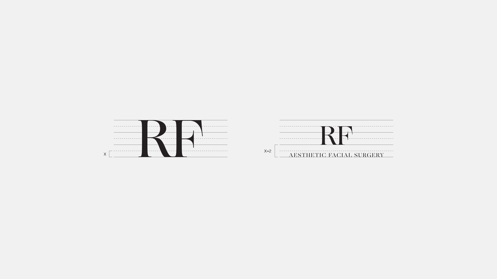
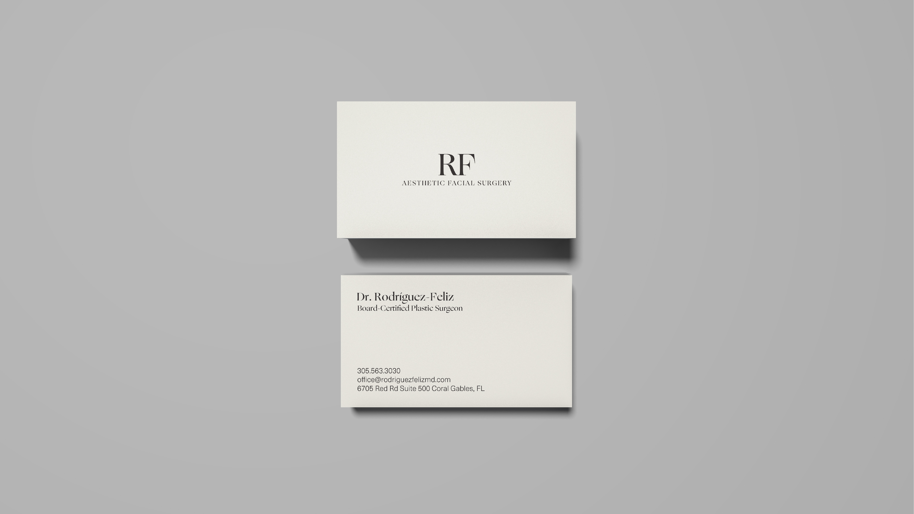

RF
RF is a Miami-based aesthetic and facial plastic surgery practice led by its founder, Dr. Rodríguez-Feliz. As the practice evolved, a new visual identity was required to convey elegance, precision, and sophistication, qualities that reflect Dr. Rodríguez-Feliz’s expertise and the elevated experience offered to every patient.
The visual identity was developed to communicate the practice’s use of state of the art equipment, cutting-edge technology, the strictest sterilization techniques, and Dr. Rodríguez-Feliz’s specialized expertise. This was accomplished through a refined typographic system and a modern visual language that appeals to a high-end clientele.

